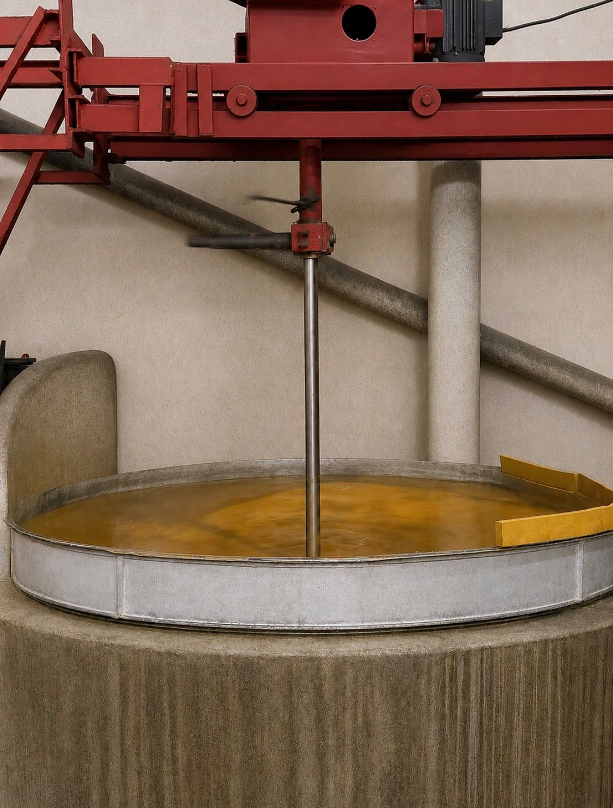

About Raju Soap Works — Coconut Oil Soap Manufacturer Since the 1970s

Founded over 50 years ago, Raju Soap Works is a family-run business dedicated exclusively to manufacturing high-quality, coconut oil-based soaps. Our factory in Ulhasnagar, Thane district, has supplied shopkeepers, distributors and households for three generations. We are proud to serve Mumbai, Thane, Kalyan, Ambernath, Badlapur, Shahpur, Karjat, Kasara, Palghar, Dahanu and nearby regions.
- 100% vegetarian, Jain-friendly soaps
- No animal fats or harmful chemicals
- Trusted by generations
- Quality soap manufacturing
Made with coconut oil
Coconut oil is the base of every bar we make. It lathers quickly even in hard water, rinses clean, and stays gentle on the hands during daily washing — which is why our customers have stayed with us for decades.
Jain-friendly and vegetarian
We use 100% vegetable oil and no animal fats of any kind. Families who keep a Jain or vegetarian household can use our soap without a second thought, and shopkeepers can stock it with confidence.
Wholesale supply, by the box
Every product is packed for both retail and wholesale — packets of 1 to 6 cakes, and boxes of 10 to 60 packets. Retailers, distributors and institutional buyers across the Mumbai and Thane belt order from us directly.